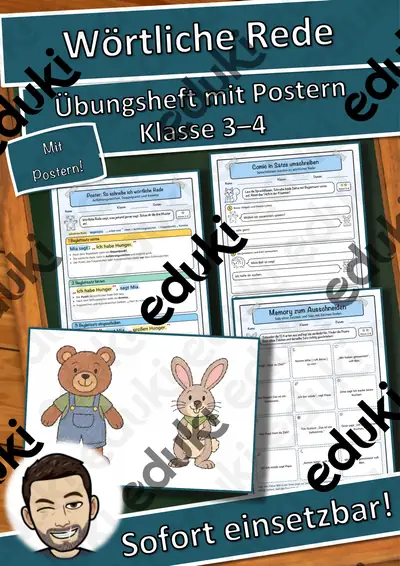
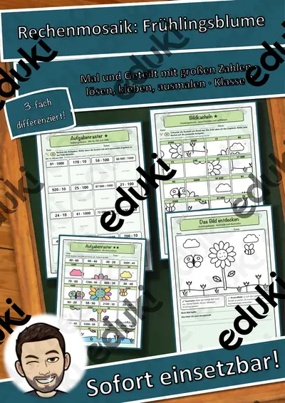
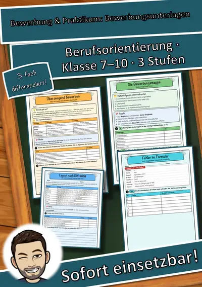
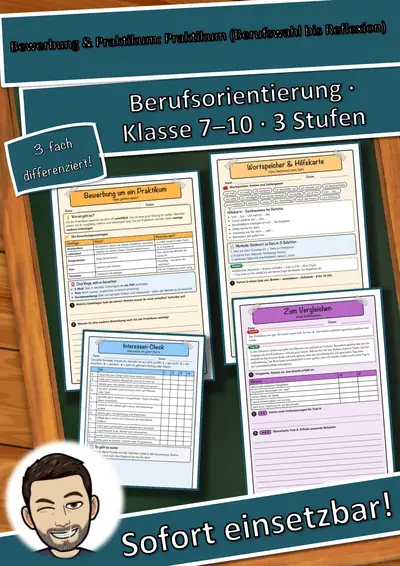
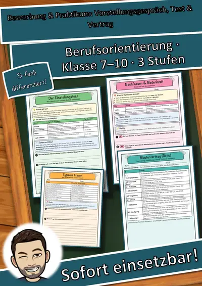

Lesespur: Der Mauerfall: vom geteilten Land zur Einheit – Lesespurgeschichte mit Rätseln (Klasse 10)
Der Mauerfall – vom geteilten Land zur Einheit – Lesespurgeschichte Geschichte (Klasse 10)Schick deine Klasse auf eine Lesespur durch die deutsche Teilung! Jasper und Elif aus der 10a besuchen für ein Referat ein Grenzlandmuseum. Die Zeitzeugin Frau Lindner erzählt ihnen in wörtlicher Rede von ihren Erinnerungen an das Leben in der DDR, und ein alter Röhrenfernseher im Foyer zeigt die Nachrichtenbilder von damals. Vom Foyer über den Kartenraum, den Grenzstreifen, das Mauerstück und den Wachturm geht es zum Alltagsraum, zur Demowand, zur Pressebühne, zum Grenzübergang und bis zum Einheitsraum. Dabei erarbeiten die Jugendlichen Teilung, Mauerbau, Grenzregime, Alltag in der DDR, die Friedliche Revolution, die Grenzöffnung am 9. November 1989 und die Deutsche Einheit am 3. Oktober 1990. Am Ende jedes Abschnitts verrät ein Hinweis den nächsten Ort auf dem Plan. Nur wer genau liest, findet den Weg und sammelt alle geheimen Buchstaben zum Lösungswort.
Die passende Lesespur für den Geschichtsunterricht in der 10. Klasse, rund um den 9. November und ideal auch für Vertretungsstunden. Geeignet für Mittelschule, Realschule, Gymnasium und Gesamtschule. Historisch exakt, sachlich und würdevoll gegenüber den Opfern an der Grenze. Das Material ist SOFORT EINSETZBAR und in DREI DIFFERENZIERUNGSSTUFEN (leicht ★ / mittel ★★ / schwer ★★★) angelegt.WICHTIG: Das komplette Material ist sowohl in FARBE als auch in SCHWARZ-WEISS enthalten – ideal zum Sparen von Druckkosten.DAS IST ENTHALTEN
- Lesespurgeschichte in 3 Niveaus (leicht, mittel, schwer)
- farbiger Plan des Grenzlandmuseums als Suchkarte
- Hörverstehen mit QR-Code zur MP3 (selbstständiges Hören mit Kopfhörern)
- vier Aufträge auf dem Weg: eine Zuordnung (Ein Land wird geteilt), eine Rechenaufgabe mit Jahreszahlen, ein Quiz (Der Herbst 1989) und ein Steckbrief
- Rätselseite (Wörter-Suchsel + Fragen rund um Teilung und Mauerfall)
- Ausmalbild zum Thema
- ausführliches Lösungsblatt für die Lehrkraft
- alles zusätzlich als komplette Schwarz-Weiß-VarianteSO GEHT DIE LESESPURDie Schülerinnen und Schüler lesen ab START, finden im Text den nächsten Ort, suchen ihn auf dem Plan und lesen bei dieser Station weiter. An jeder richtigen Station gibt es einen Buchstaben. Eingeplante Sackgassen (Fahrradständer, Picknickbank, Mülleimer, Parkplatz) sind keine Stationen und dienen der Selbstkontrolle. Am Ende werden die gesammelten Buchstaben umgestellt und ergeben ein geheimes Lösungswort. (Die Lösungen sind selbstverständlich nur im Lösungsblatt für die Lehrkraft enthalten.)INHALTLICHER SCHWERPUNKTBesatzungszonen und Sektoren 1945, Gründung von BRD und DDR 1949, Fluchtbewegung, Mauerbau am 13. August 1961, innerdeutsche Grenze und Todesstreifen, Opfer an der Grenze, Alltag in der DDR (Planwirtschaft, Reisebeschränkungen, Überwachung), Fluchtwelle über Ungarn und Botschaften 1989, Montagsdemonstrationen und Friedliche Revolution, Pressekonferenz und Grenzöffnung am 9. November 1989, Deutsche Einheit am 3. Oktober 1990.ABGEDECKTER LEHRPLAN (Klasse 10)
- Geschichte (LehrplanPLUS Bayern) – Deutschland nach 1945: Teilung, Leben in beiden deutschen Staaten, Friedliche Revolution und Wiedervereinigung.
- Deutsch – Sachtexte sinnentnehmend lesen; einem Hörtext gezielt Informationen entnehmen (Hörverstehen mit MP3).
- Mathematik – Zeitspannen mit Jahreszahlen berechnen.
Geeignet für Freiarbeit, Stationenlernen, Vertretungsstunden, Wochenplan und für die Tage rund um den 9. November und den 3. Oktober. Klassenstufe 10.
Ähnliche Materialien

Wörtliche Rede sicher beherrschen

Wörtliche Rede – Übungsheft mit Postern, Redebegleitsätzen und Comic-Dialogen Kl. 3–4

Lesespur: Die Märzrevolution 1848: Freiheit, Einheit und die Paulskirche – Lesespurgeschichte mit Rätseln (Klasse 8)

Rechenmosaik Frühlingsblume: Mal und Geteilt mit großen Zahlen – lösen, kleben, ausmalen in 3 Stufen (Klasse 4)
Rechenmosaik Weihnachtsbaum: Geteilt-Aufgaben (Division) – lösen, kleben, ausmalen in 3 Stufen (Klasse 3)

Bewerbung & Praktikum – Paket Bewerbungsunterlagen: 5 Einheiten (Klasse 7–10)

Bewerbung & Praktikum – Paket Praktikum (Berufswahl bis Reflexion): 8 Einheiten (Klasse 7–10)
